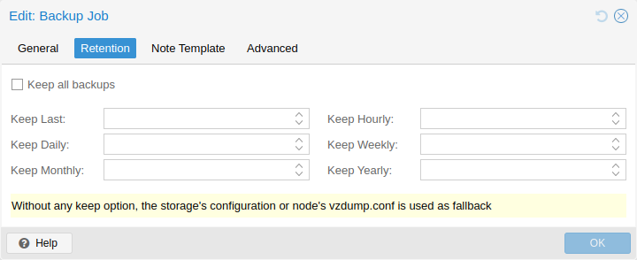

With the prune-backups option you can specify which backups you want to keep
in a flexible manner.

The following retention options are available:
keep-all <boolean>
true, no other options can be set.
keep-last <N>
<N> backups.
keep-hourly <N>
<N> hours. If there is more than one
backup for a single hour, only the latest is kept.
keep-daily <N>
<N> days. If there is more than one
backup for a single day, only the latest is kept.
keep-weekly <N>
<N> weeks. If there is more than one
backup for a single week, only the latest is kept.
Weeks start on Monday and end on Sunday. The software uses the
ISO week date-system and handles weeks at the end of the year correctly.
keep-monthly <N>
<N> months. If there is more than one
backup for a single month, only the latest is kept.
keep-yearly <N>
<N> years. If there is more than one
backup for a single year, only the latest is kept.
The retention options are processed in the order given above. Each option only covers backups within its time period. The next option does not take care of already covered backups. It will only consider older backups.
Specify the retention options you want to use as a comma-separated list, for example:
# vzdump 777 --prune-backups keep-last=3,keep-daily=13,keep-yearly=9
While you can pass prune-backups directly to vzdump, it is often more
sensible to configure the setting on the storage level, which can be done via
the web interface.
You can use the prune simulator of the Proxmox Backup Server documentation to explore the effect of different retention options with various backup schedules.
The backup frequency and retention of old backups may depend on how often data changes, and how important an older state may be, in a specific work load. When backups act as a company’s document archive, there may also be legal requirements for how long backups must be kept.
For this example, we assume that you are doing daily backups, have a retention period of 10 years, and the period between backups stored gradually grows.
keep-last=3 - even if only daily backups are taken, an admin may want to
create an extra one just before or after a big upgrade. Setting keep-last
ensures this.
keep-hourly is not set - for daily backups this is not relevant. You cover
extra manual backups already, with keep-last.
keep-daily=13 - together with keep-last, which covers at least one
day, this ensures that you have at least two weeks of backups.
keep-weekly=8 - ensures that you have at least two full months of
weekly backups.
keep-monthly=11 - together with the previous keep settings, this
ensures that you have at least a year of monthly backups.
keep-yearly=9 - this is for the long term archive. As you covered the
current year with the previous options, you would set this to nine for the
remaining ones, giving you a total of at least 10 years of coverage.
We recommend that you use a higher retention period than is minimally required by your environment; you can always reduce it if you find it is unnecessarily high, but you cannot recreate backups once they have been removed.